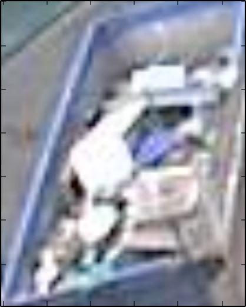
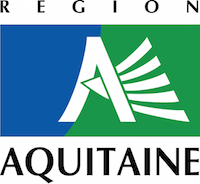

6element
ANTS - Open Innovation Lab
 @vallettea for @beingAnts
@vallettea for @beingAnts

Le recyclage

Crée de la donnée

Premier prototype

capteur v2


Negatives

Le niveau des bennes
 → → 4
→ 4
Merci !
http://ants.builders

Ce projet est sponsorisé par la Région Aquitaine
@beingAnts
/